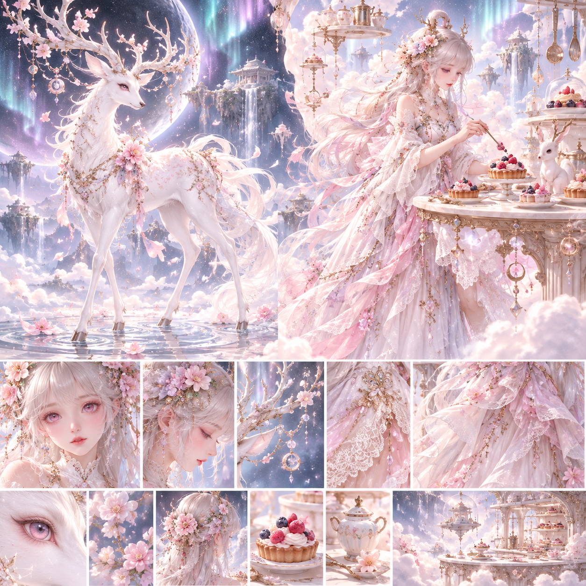
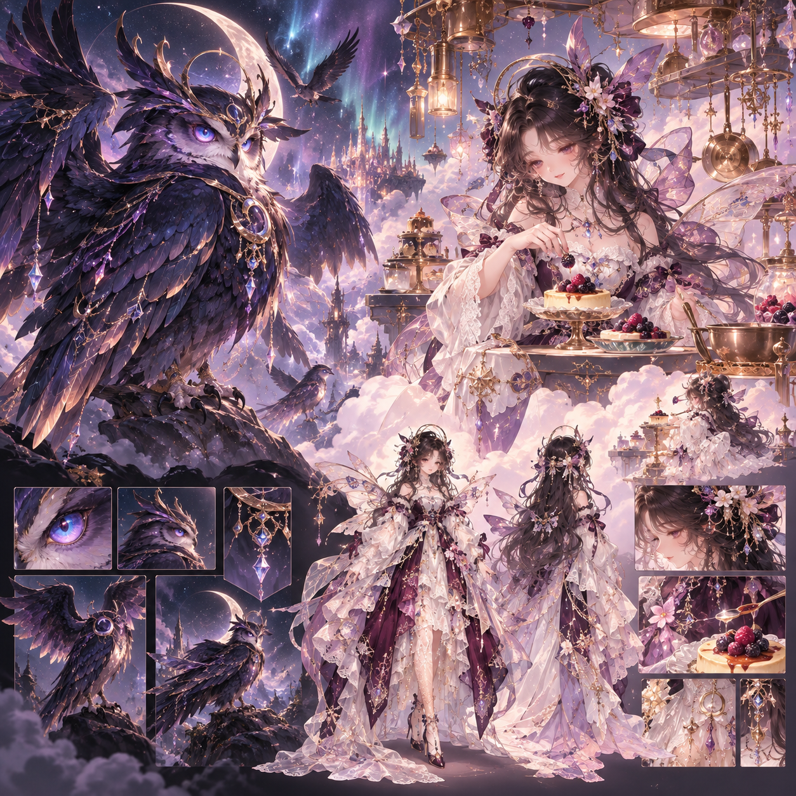
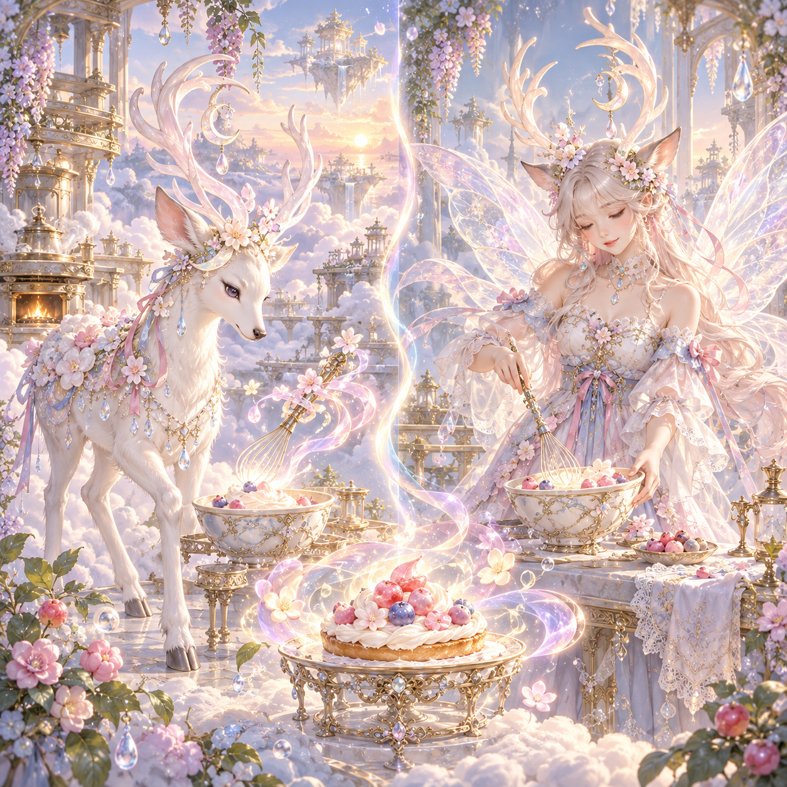
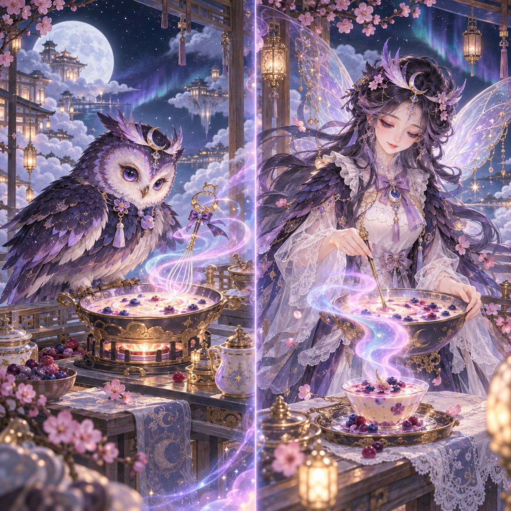
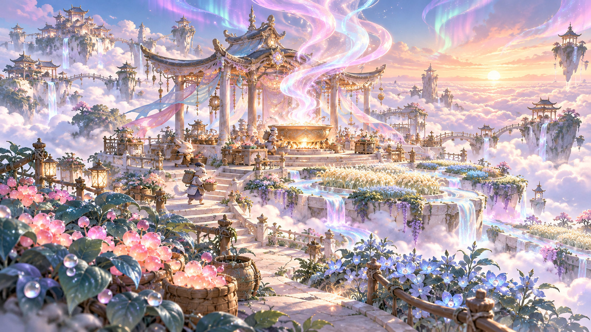

淺色 · 月露雪鹿

建議動作：引花露入果塔，露滴凝成花紋；完整鹿身與果塔建立視線連線。仙女形態沿用花角與月滴。
QuestNote · 首批概念審閱 · 2026-10-09 · 企劃 v1
仙女化為靈獸下凡，從烹調與分享中找回雲上宴席消失的光與香。
人工審圖待回饋 12 隻／深淺各六／2 UR。只有 2 SSR＋2 UR 可覺醒為仙女。這是概念審閱頁，未接入正式 App，也沒有審圖核准或發布授權。
建議：兩張設定板定造型，兩張料理對照定故事動作；正式初遇靈獸與覺醒仙女各自製作獨立完整卡圖。先完成月露雪鹿雙形態代表切片，再擴展。

建議動作：引花露入果塔，露滴凝成花紋；完整鹿身與果塔建立視線連線。仙女形態沿用花角與月滴。

建議動作：展翼護住夜灶，散香聚成返航極光；仙女沿用月冠、羽紗與暖灶光，避免惡魔感。



擁有本池任一靈獸即可前往；派遣 60 分鐘、能量 5，帶回霓霞花露。完整故事與五個探索里程碑見企劃。
| 稀有度 | 淺色 | 深色 | 覺醒 |
|---|---|---|---|
| UR | 月露雪鹿 | 曜夜玄鸮 | 可 |
| SSR | 櫻紗靈狐 | 霧靛羽鵠 | 可 |
| SR | 奶霜綺兔 | 藍糖霧貂 | 保持靈獸 |
| SR | 桃露茶栗 | 紫盞雲狸 | 保持靈獸 |
| R | 花綃糖雀 | 夜莓綺蝟 | 保持靈獸 |
| N | 糖霧粉蝶 | 紫露星螢 | 保持靈獸 |
正式基準：V3.9.2 · source bc216baa · main 7b7fb0b · artifact 58f2c847…b7fe2。原圖由使用者提供，生成 metadata 未核實；沒有 Library ID。詳細內容：企劃文件／結構化企劃／原圖來源與雜湊。